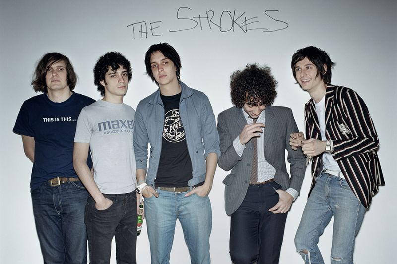

The Strokes
Resumen
The Strokes es una banda de rock originaria de Nueva York Estados Unidos formada en 1998. Tras el lanzamiento de su álbum debut Is This It en 2001, muchos críticos nombraron al grupo como: "Los salvadores del rock". Han vendido más de 8 millones de copias en todo el mundo.
haga click en alguno de los integrantes para obtener información sobre ellos
